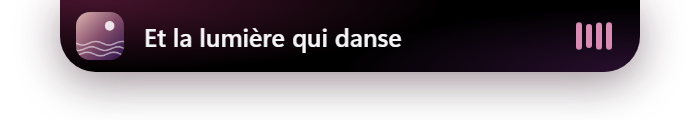
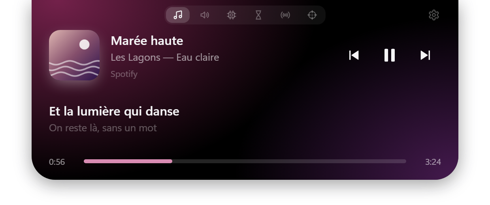

Musique et paroles
Spotify, Deezer, YouTube… Le titre en cours, les contrôles et les paroles qui défilent en rythme. Les couleurs suivent la pochette.
Passe la souris sur la barre pour l’ouvrir
Musique et paroles synchronisées, volume de chaque appli, infos PC, temps d’écran, stats Twitch et rang Valorant. Tout est là, discret, et se déploie quand tu passes la souris.
Chaque widget s’active ou se coupe dans les paramètres. Éteint, il ne consomme rien.
Spotify, Deezer, YouTube… Le titre en cours, les contrôles et les paroles qui défilent en rythme. Les couleurs suivent la pochette.
Le volume général et celui de chaque appli, un clic sur l’icône pour couper. Fini le mélangeur de Windows.
Processeur, carte graphique et sa température, mémoire, VRAM et ping, en direct.
Combien de temps tu passes sur ton PC, jour par jour, et sur quelles applis.
Followers, nouveaux du jour, subs, spectateurs. En live, un bandeau fait défiler tes stats sous la barre.
Ton rang, tes RR, le dernier match et tes victoires / défaites du jour, sans ouvrir le jeu.
Volume, luminosité, Verr. Maj, langue du clavier, batterie, Wi-Fi, casque Bluetooth : affichés dans la barre.
Quand rien ne joue, il cligne des yeux, suit ta souris… et finit par s’endormir.
Fermée, la barre reste discrète. Ouverte, chaque onglet a sa page.


Écrit en Rust avec le moteur web déjà présent dans Windows. Pensé pour tourner pendant que tu joues.
Toujours la dernière version. Pas besoin de droits administrateur.
Télécharger pour WindowsLagon n’est pas encore signé, alors Windows affiche un écran bleu « Windows a protégé votre ordinateur ». Clique sur Informations complémentaires, puis Exécuter quand même.
La barre apparaît en haut de l’écran et démarre avec Windows. La roue dentée (barre ouverte) donne accès aux réglages.
Pour mettre à jour, installe simplement la nouvelle version par-dessus : tes réglages sont gardés.
Oui.
Lagon ne touche jamais au jeu : il ne lit pas sa mémoire et ne s’injecte pas dedans. C’est une fenêtre Windows ordinaire, comme Discord ou Spotify. Ton rang vient d’internet (API HenrikDev), pas du jeu.
Par défaut, Lagon se cache et se met en pause quand un jeu est en plein écran, pour ne rien te prendre en performances. Tu peux changer ça dans Paramètres → Performance. En mode « plein écran » exclusif, Windows n’affiche de toute façon aucune fenêtre par-dessus le jeu : passe en « fenêtré plein écran » pour voir la barre.
Seulement ce que tu actives : la recherche des paroles (LRCLIB), tes stats Twitch si tu connectes ta chaîne, ton rang si tu ajoutes ta clé HenrikDev. Pas de compte Lagon, pas de publicité, pas de suivi. Tes identifiants Twitch et ta clé sont chiffrés sur ton PC.
Crée une clé gratuite sur le tableau de bord HenrikDev, puis dans Lagon : Paramètres → Valorant, ajoute ton Riot ID (Pseudo#TAG), ta région et colle la clé.
Oui, Windows 10 et 11 (64 bits).